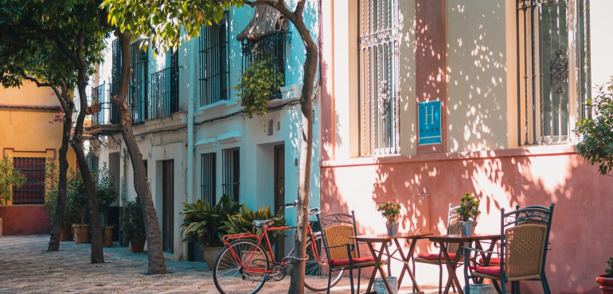

Jezael Melgoza 5 June 2020
Tom W 30 March 2021

Johan Mouchet 14 August 2019
Federico Di Dio 29 October 2020
Casey Horner 9 July 2021
Alexander Rotker 22 April 2022
Robert Lukeman 30 June 2020
Sean Oulashin 5 September 2019
John Fowler 10 August 2021
Dave Hoefler 13 February 2021
Léonard Cotte 5 September 2019
Rob Mulally 30 May 2020
Pooja Chaudhary 30 June 2020
Dom Hill 13 October 2021
Seth Doyle 30 May 2020
devn 30 June 2020
Noah Buscher 13 February 2021
Sincerely Media 7 January 2021
Seth Doyle 30 June 2020
Melissa Askew 29 April 2021
Brooke Cagle 5 August 2019
Clem Onojeghuo 1 July 2021